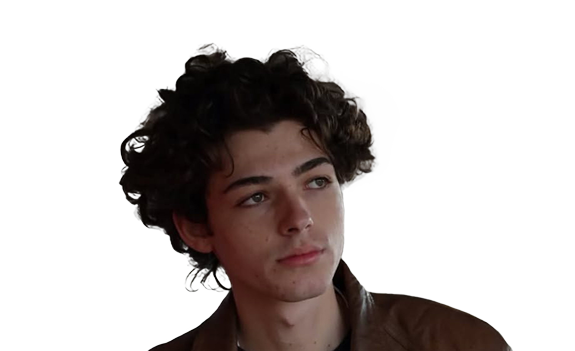

BIO
I'm Andrea, a UX/UI designer student from Rome, born in 2004 and raised
in a big family with six siblings.
My passion for video games as a child sparked my curiosity for art and
the digital world.
At 15, I enrolled in Stendhal, a graphic design high school in Rome, where I
discovered my love for visual communication.
After graduating, I began studying at Start2Impact University (2023),
where I'm currently finishing my UX/UI design journey.
Along the way, I've completed several projects — from accessibility and
wireframing to UI design, copywriting, and end-to-end development.
I'm now learning programming to expand my skills and become a more
versatile digital creator.